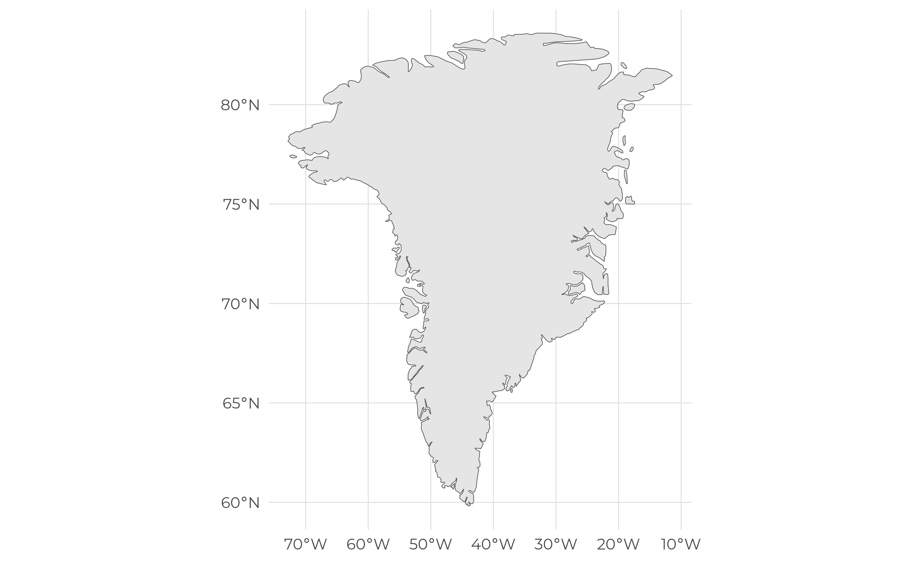
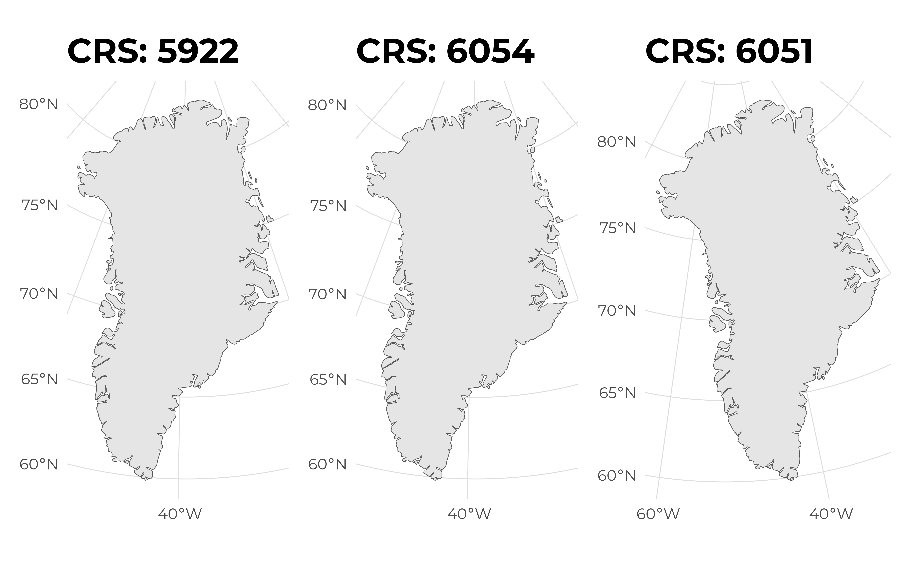
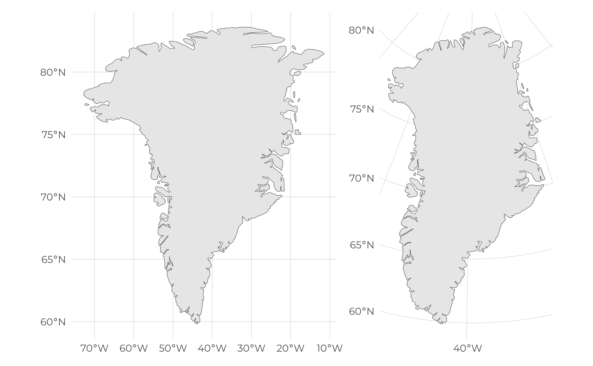

library(rnaturalearth)
library(rnaturalearthdata)
library(sf)
library(patchwork)
library(crsuggest)When creating maps, choosing an appropriate geographical projection is often a difficult task (at least for me). There are plenty of projections to choose from, and none can be qualified as the best one. It all depends on what you are trying to achieve. Websites like the projection wizard website offer a playground to experiment with different projections and how they look like depending on where you are looking at on the globe.

Image from: https://en.wikipedia.org/wiki/Map_projection
The goal of this blog post is not to go into details and consideration on how to choose a good projection (it is out of my expertise), but rather present a quick overview of the crsuggest R package that can help to find a projection suited for the data to be displayed.
# Download the Greenland shapefile
map <- ne_countries(country = "greenland", returnclass = "sf", scale = "medium")
# Looks at the projection
st_crs(map)$proj4string
#> [1] "+proj=longlat +datum=WGS84 +no_defs"We can see that WGS84 is used as the reference coordinate system. Plotting the shapefile immediately shows that the result is somewhat distorted.
p1 <- ggplot() +
geom_sf(data = map)
p1
Time to look at the crsuggest package. The function suggest_crs() takes a spatial dataset as inputs (here the map object) and return a list (n = 10 by default) of suggested coordinate systems in a tibble.
suggested_crs <- suggest_crs(map, limit = 3)
suggested_crs
#> # A tibble: 3 × 6
#> crs_code crs_name crs_type crs_gcs crs_units crs_proj4
#> <chr> <chr> <chr> <dbl> <chr> <chr>
#> 1 5922 WGS 84 / EPSG Arctic Regional z… project… 4326 m +proj=lc…
#> 2 6054 GR96 / EPSG Arctic zone 3-31 project… 4747 m +proj=lc…
#> 3 6051 GR96 / EPSG Arctic zone 2-18 project… 4747 m +proj=lc…Let’s make some plots using the suggested CRS.
plot_map <- function(crs, map) {
ggplot() +
geom_sf(data = map) +
coord_sf(crs = as.numeric(crs)) +
labs(
title = paste("CRS:", crs)
)
}
maps <- lapply(suggested_crs$crs_code, plot_map, map = map)We can see that the projected maps look more accurate than the original map.
wrap_plots(maps, ncol = 3)
This is even more obvious when they are compared side by side.
p2 <- ggplot() +
geom_sf(data = map) +
coord_sf(crs = 5922)
p1 + p2
Session info
#> ─ Session info ───────────────────────────────────────────────────────────────────────────────────────────────────────
#> setting value
#> version R version 4.4.0 (2024-04-24)
#> os Linux Mint 21.3
#> system x86_64, linux-gnu
#> ui X11
#> language en_CA:en
#> collate en_CA.UTF-8
#> ctype en_CA.UTF-8
#> tz America/Montreal
#> date 2024-05-02
#> pandoc 2.9.2.1 @ /usr/bin/ (via rmarkdown)
#>
#> ─ Packages ───────────────────────────────────────────────────────────────────────────────────────────────────────────
#> ! package * version date (UTC) lib source
#> P base64enc 0.1-3 2015-07-28 [?] RSPM
#> P cachem 1.0.8 2023-05-01 [?] RSPM
#> P class 7.3-22 2023-05-03 [?] CRAN (R 4.3.1)
#> P classInt 0.4-10 2023-09-05 [?] RSPM
#> P cli 3.6.2 2023-12-11 [?] RSPM
#> P codetools 0.2-19 2023-02-01 [?] CRAN (R 4.2.2)
#> P colorspace 2.1-0 2023-01-23 [?] RSPM
#> P crosstalk 1.2.1 2023-11-23 [?] RSPM
#> P crsuggest * 0.4 2022-07-06 [?] RSPM
#> P DBI 1.2.2 2024-02-16 [?] RSPM
#> P devtools 2.4.5 2022-10-11 [?] RSPM (R 4.4.0)
#> P digest 0.6.35 2024-03-11 [?] RSPM
#> P dplyr * 1.1.4 2023-11-17 [?] RSPM
#> P e1071 1.7-14 2023-12-06 [?] RSPM
#> P ellipsis 0.3.2 2021-04-29 [?] RSPM
#> P evaluate 0.23 2023-11-01 [?] RSPM
#> P extrafont 0.19 2023-01-18 [?] RSPM
#> P extrafontdb 1.0 2012-06-11 [?] RSPM
#> P fansi 1.0.6 2023-12-08 [?] RSPM
#> P farver 2.1.1 2022-07-06 [?] RSPM
#> P fastmap 1.1.1 2023-02-24 [?] RSPM
#> P forcats * 1.0.0 2023-01-29 [?] RSPM
#> P fs 1.6.4 2024-04-25 [?] CRAN (R 4.4.0)
#> P generics 0.1.3 2022-07-05 [?] RSPM
#> P ggplot2 * 3.5.1 2024-04-23 [?] RSPM
#> P ggpmthemes * 0.0.2 2024-04-25 [?] Github (pmassicotte/ggpmthemes@993d61e)
#> P glue 1.7.0 2024-01-09 [?] RSPM
#> P gtable 0.3.5 2024-04-22 [?] RSPM
#> P hms 1.1.3 2023-03-21 [?] RSPM
#> P htmltools 0.5.8.1 2024-04-04 [?] RSPM
#> P htmlwidgets 1.6.4 2023-12-06 [?] RSPM
#> P httpuv 1.6.15 2024-03-26 [?] RSPM
#> P httr 1.4.7 2023-08-15 [?] RSPM
#> P jsonlite 1.8.8 2023-12-04 [?] RSPM
#> P KernSmooth 2.23-22 2023-07-10 [?] CRAN (R 4.3.1)
#> P knitr 1.46 2024-04-06 [?] RSPM
#> P later 1.3.2 2023-12-06 [?] RSPM
#> P lattice 0.22-6 2024-03-20 [?] RSPM (R 4.4.0)
#> P leafem 0.2.3 2023-09-17 [?] RSPM
#> P leaflet 2.2.2 2024-03-26 [?] RSPM
#> P lifecycle 1.0.4 2023-11-07 [?] RSPM
#> P lubridate * 1.9.3 2023-09-27 [?] RSPM
#> P magrittr 2.0.3 2022-03-30 [?] RSPM
#> P mapview 2.11.2 2023-10-13 [?] RSPM
#> P memoise 2.0.1 2021-11-26 [?] RSPM
#> P mime 0.12 2021-09-28 [?] RSPM
#> P miniUI 0.1.1.1 2018-05-18 [?] RSPM (R 4.4.0)
#> P munsell 0.5.1 2024-04-01 [?] RSPM
#> P patchwork * 1.2.0 2024-01-08 [?] RSPM
#> P pillar 1.9.0 2023-03-22 [?] RSPM
#> P pkgbuild 1.4.4 2024-03-17 [?] RSPM (R 4.4.0)
#> P pkgconfig 2.0.3 2019-09-22 [?] RSPM
#> P pkgload 1.3.4 2024-01-16 [?] RSPM (R 4.4.0)
#> P png 0.1-8 2022-11-29 [?] RSPM
#> P processx 3.8.4 2024-03-16 [?] RSPM
#> P profvis 0.3.8 2023-05-02 [?] RSPM (R 4.4.0)
#> P promises 1.3.0 2024-04-05 [?] RSPM
#> P proxy 0.4-27 2022-06-09 [?] RSPM
#> P ps 1.7.6 2024-01-18 [?] RSPM
#> P purrr * 1.0.2 2023-08-10 [?] RSPM
#> P quarto * 1.4 2024-03-06 [?] RSPM
#> P R.cache 0.16.0 2022-07-21 [?] RSPM
#> P R.methodsS3 1.8.2 2022-06-13 [?] RSPM
#> P R.oo 1.26.0 2024-01-24 [?] RSPM
#> P R.utils 2.12.3 2023-11-18 [?] RSPM
#> P R6 2.5.1 2021-08-19 [?] RSPM
#> P raster 3.6-26 2023-10-14 [?] RSPM
#> P Rcpp 1.0.12 2024-01-09 [?] RSPM
#> P readr * 2.1.5 2024-01-10 [?] RSPM
#> P remotes 2.5.0 2024-03-17 [?] RSPM (R 4.4.0)
#> P renv 1.0.7 2024-04-11 [?] RSPM (R 4.4.0)
#> P rlang 1.1.3 2024-01-10 [?] RSPM
#> P rmarkdown 2.26 2024-03-05 [?] RSPM
#> P rnaturalearth * 1.0.1 2023-12-15 [?] RSPM
#> P rnaturalearthdata * 1.0.0.9000 2024-05-02 [?] Github (ropensci/rnaturalearthdata@d0e161e)
#> P rstudioapi 0.16.0 2024-03-24 [?] RSPM
#> P Rttf2pt1 1.3.12 2023-01-22 [?] RSPM
#> P satellite 1.0.5 2024-02-10 [?] RSPM
#> P scales 1.3.0 2023-11-28 [?] RSPM
#> P sessioninfo 1.2.2 2021-12-06 [?] RSPM (R 4.4.0)
#> P sf * 1.0-16 2024-03-24 [?] RSPM
#> P shiny 1.8.1.1 2024-04-02 [?] RSPM (R 4.4.0)
#> P sp 2.1-4 2024-04-30 [?] CRAN (R 4.4.0)
#> P stringi 1.8.3 2023-12-11 [?] RSPM
#> P stringr * 1.5.1 2023-11-14 [?] RSPM
#> P styler * 1.10.3 2024-04-07 [?] RSPM
#> P terra 1.7-71 2024-01-31 [?] RSPM
#> P tibble * 3.2.1 2023-03-20 [?] RSPM
#> P tidyr * 1.3.1 2024-01-24 [?] RSPM
#> P tidyselect 1.2.1 2024-03-11 [?] RSPM
#> P tidyverse * 2.0.0 2023-02-22 [?] RSPM
#> P timechange 0.3.0 2024-01-18 [?] RSPM
#> P tzdb 0.4.0 2023-05-12 [?] RSPM
#> P units 0.8-5 2023-11-28 [?] RSPM
#> P urlchecker 1.0.1 2021-11-30 [?] RSPM (R 4.4.0)
#> P usethis 2.2.3 2024-02-19 [?] RSPM (R 4.4.0)
#> P utf8 1.2.4 2023-10-22 [?] RSPM
#> P vctrs 0.6.5 2023-12-01 [?] RSPM
#> P withr 3.0.0 2024-01-16 [?] RSPM
#> P xfun 0.43 2024-03-25 [?] RSPM
#> P xtable 1.8-4 2019-04-21 [?] RSPM (R 4.4.0)
#> P yaml 2.3.8 2023-12-11 [?] RSPM
#>
#> [1] /tmp/RtmpP1MQP8/renv-use-libpath-18807a3f89bb01
#> [2] /tmp/RtmpP1MQP8/renv-sandbox
#>
#> P ── Loaded and on-disk path mismatch.
#>
#> ──────────────────────────────────────────────────────────────────────────────────────────────────────────────────────